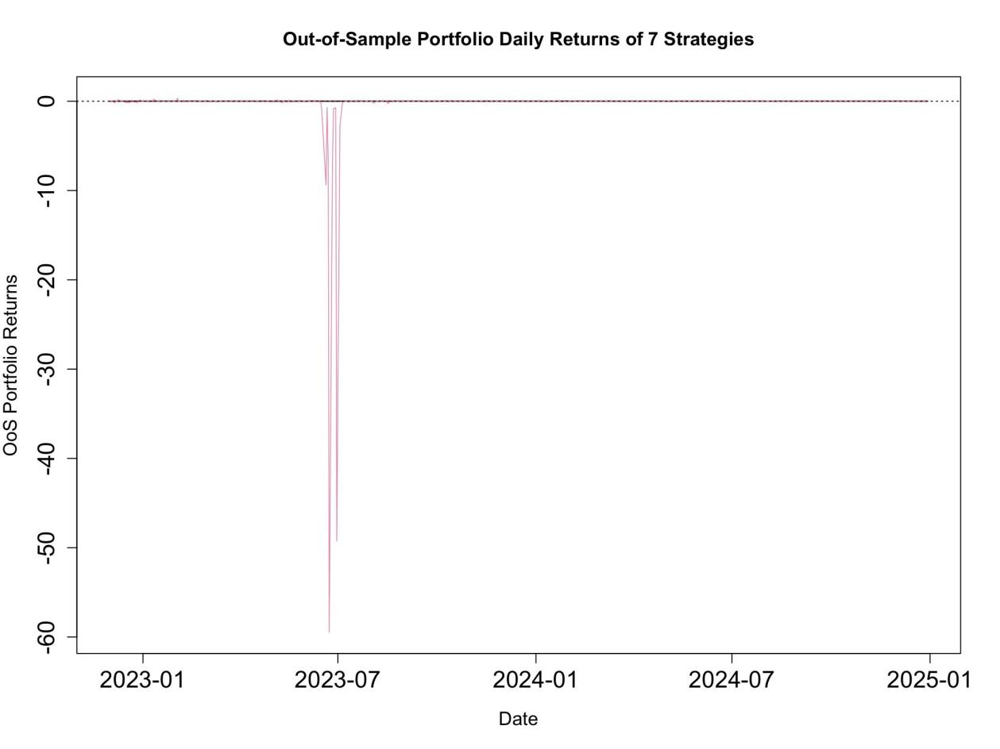
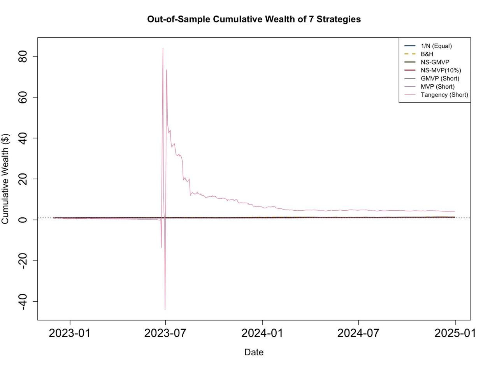
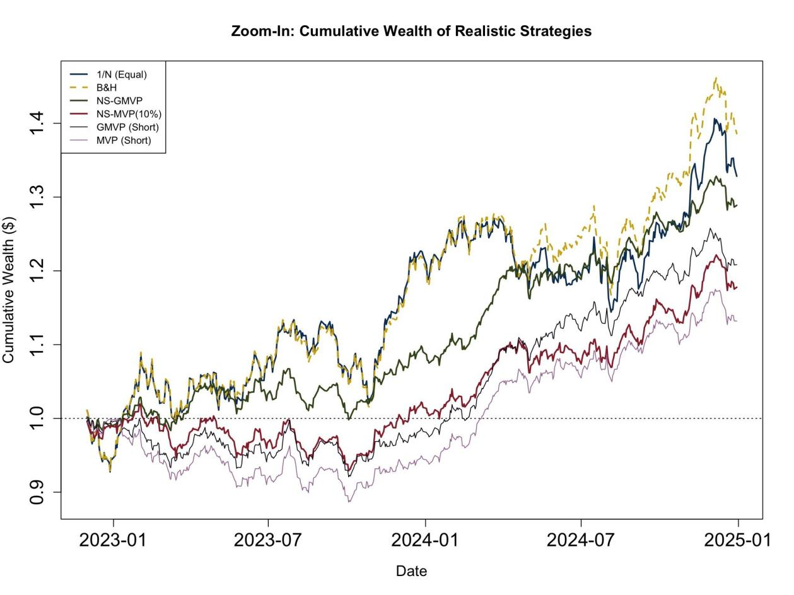

CHAPTER 04｜對應報告第 4 章
樣本外實證結果
522 個交易日的樣本外績效：報酬、波動、夏普、下行風險、換手率。
1.249
NS-GMVP 夏普指標（全場最高）
8.1%
NS-GMVP 年化波動度
6.5%
NS-GMVP 最大回撤（全場最低）
16.8%
B&H 年化報酬（全場最高）
4.1 樣本外報酬與累積財富

被動策略（1/N 與 B&H）的波動幅度大致一致；允許放空的主動策略（如 Tangency 與 MVP）則在特定交易日出現劇烈震盪。市場發生未預期的結構性衝擊時，高度依賴歷史預期報酬的模型容易產生極端權重，造成單日損益劇烈跳動。


- 被動策略波動較高：1/N 與 B&H 期末都有正報酬，但上升過程震盪較大。市場出現結構性衝擊時，把資金平均分給受災戶，會讓組合暴露在不必要的波動中。
- 禁止放空展現防禦力：NS-GMVP 的財富曲線上升得非常平穩；無限制的 Tangency 則因嚴重估計誤差與軋空效應而崩跌，體現限制放空在極端市況下的保護價值。
4.2 核心績效評估
各策略夏普指標（扣除 2.5% 無風險利率）
深藍色為表現最佳的 NS-GMVP。滑鼠移到長條上可看數值。
表 6：樣本外績效總表。綠底為 NS-GMVP，紅字為 Tangency。點欄位名稱可以排序。數值為報告原始小數，例如 Ann_Ret 0.148 代表年化報酬 14.8%；Tangency 的極端數值反映其財富曲線崩跌，原樣保留。
| 指標 | 意思 |
|---|---|
| Ann_Ret／Ann_Vol | 年化報酬率／年化波動度 |
| Sharpe | 夏普指標：每承擔一單位波動，換到多少超額報酬 |
| VaR_05／ES_05 | 95% 信心水準下的單日風險值／超過風險值時的平均損失（預期短缺） |
| LPSD | 下行標準差：只計算下跌部分的波動 |
| Turnover | 每日平均換手率，越高代表交易越頻繁、成本越高 |
| HHI | 資產集中度，越高代表資金越集中在少數資產 |
| SLR | 放空比例：放空部位占做多部位的比例 |
| MDD | 最大回撤：從高點到低點的最大跌幅 |
- 風險與報酬的取捨：B&H 受惠於大盤多頭，年化報酬 16.8% 為全場最高，但年化波動度也有 14.5%。NS-GMVP 把年化波動度壓到 8.1%（GMVP 為 8.0%，兩者非常接近），達成防禦目標。
- 夏普指標：NS-GMVP 的夏普指標 1.249 為所有策略最高，明顯優於 1/N 的 0.841 與 B&H 的 0.986。即使不做任何報酬預測，只用歷史共變異數矩陣把風險降到最低並加上放空限制，仍能在 AI 衝擊期間得到最佳的風險調整後報酬。
4.3 下行風險與極端回撤
- 極端尾部風險（VaR 與 ES）：95% 信心水準下，1/N 的單日預期短缺（ES）為 -2.0%；NS-GMVP 縮減到 -1.1%，能有效抵抗左尾衝擊。
- 最大回撤（MDD）：1/N 為 10.0%，帶目標報酬限制的 MVP 高達 11.4%；NS-GMVP 僅 6.5%，下檔保護能力最強。
4.4 實務交易限制
- 換手率與摩擦成本：無限制的 MVP 與 Tangency 每日平均換手率高達 0.117 與 34.198，頻繁且大量地買賣，獲利被交易成本大幅侵蝕甚至歸零；NS-GMVP 只有 0.029。
- 資產集中度（HHI）：1/N 的 HHI 只有 0.027（完全分散）；NS-GMVP 上升到 0.213，反映模型在滾動過程中主動篩除高風險的 AI 受災戶，把資金集中在低相關或低波動的防禦型標的。
- 放空比例（SLR）：被動策略與禁止放空策略的 SLR 都是 0；未受限的 GMVP 高達 0.459（放空部位占做多部位的 45.9%）。現實中高度依賴放空會面臨保證金追繳與融券維持率風險，凸顯禁止放空的必要。